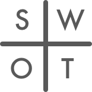

Querido Consultor,
Você escolheu começar sua carreira no Consulting sem pensar muito, era só para ver o que poderia rolar... Mas sobretudo era para não se fechar nenhuma opção. Era um jeito de entrar no mundo corporativo e descobrir o que você realmente ia querer fazer da sua vida...
Mas com o tempo você começa a questionar porquê você passa tanto tempo analisando planilhas de excel, e fazendo tanto esforço para alinhar caixinhas conectadas com setinhas em powerpoint... Agora você reza para que seu time seja legal e que o galpão onde os seus clientes vão te mandar trabalhar esteja perto de um Mc Donald’s... Você vive falando de oportunidades, sinergias e estratégias disruptivas de inovação mas sabe que todo essa inteligência tem pouca chance de ser implementada porque tudo isso é só um deck de slides e sobretudo o dono não é você.
Tá na hora de fazer um  de você, meu amigo.
O cálculo de ROI não está mais fechando e suas perspectivas são fracas... Você está louco para fazer algo diferente, empreender! Mas não sabe por onde começar e se souber programar, é só em VBA…. então, a chance de ter o seu MVP (protótipo da ideia) do “next big thing” sair do papel vai depender da sorte de encontrar um CTO disponível e que esteja de pular com você (#blackswan).
A outra opção que você chegou a olhar seria gastar seus bônus com um freela/agência de programação cujo objetivo será de estender o prazo de lançamento até você não ter mais a grana do bônus, ou paciência... E aí, ficar sem grana para nada. Foi o que aconteceu com seu tio que só falava da ideia genial dele de facebook para gatos, até o dia que ele nunca mas tocou no assunto...
O Consulting é muito bom, mas não é para a vida toda. Não deixe ninguém escolher sua carreira por você. Agora o maior risco é não tomar nenhum.
Junte as suas férias e vem aprender a codar em 9 semanas o seu próprio projeto. Junte-se na próxima turma do Le Wagon, o maior bootcamp de coding do mundo, que formou mais de 2500 alunos em desenvolvimento web em 25 cidades pelo mundo, e ajudou a criar centenas de startups no processo. Seu downside ? Virar um cara de negócio que entende programação. Nada mal para sobreviver no século 21.
Ainda em dúvida? Participe dos nossos próximos workshops gratuitos para ter um gostinho, veja a programação completa ou vem assistir ao nosso DemoDay no Google Campus dia 20 de abril as 15h.